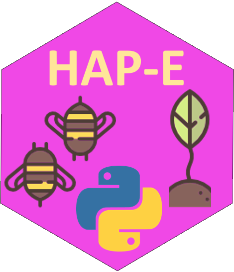
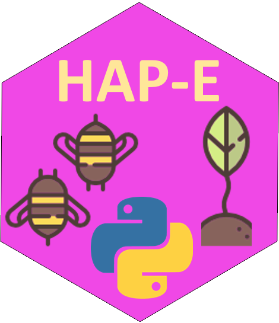

Schedule
 

Our current meeting schedule Wednesdays at 1pm UK time via Teams, and occasionally in person. Join our Slack channel and introduce yourself for more information and to participate (please join with your full real name, e.g. “Florence Nightingale”.
The Future
2023-02-08 (no meeting this week)
2023-02-15 (meeting #112) Natural Language Processing session #02 (Ed)
2023-02-22 (no meeting this week)
2023-03-01 (no meeting this week)
Meeting topics
 2023-02-01 (meeting #111) Spatial statistics with R Read Chapter 02 and exercises in Plant 2019 Spatial Data Analysis 2ed (Ed) :::
2023-02-01 (meeting #111) Spatial statistics with R Read Chapter 02 and exercises in Plant 2019 Spatial Data Analysis 2ed (Ed) :::
 ::: Plant ch02 ::: html slides ch 02 ::: Plant ALL DATA ::: Plant ALL CODE ::: Ed ch02 code
::: Plant ch02 ::: html slides ch 02 ::: Plant ALL DATA ::: Plant ALL CODE ::: Ed ch02 code

 2023-01-25 (meeting #110) Bootcamp launch S02E01 (Ed + HARUG!) ::: Bootcamp1 ::: slides overview ::: slides Setup 01
2023-01-25 (meeting #110) Bootcamp launch S02E01 (Ed + HARUG!) ::: Bootcamp1 ::: slides overview ::: slides Setup 01
 2023-01-18 (meeting #109) Natural Language Processing session #01 (Ed) ::: NLP1 slides ::: NLP1 notbook
2023-01-18 (meeting #109) Natural Language Processing session #01 (Ed) ::: NLP1 slides ::: NLP1 notbook

 2023-01-11 (meeting #108) Spatial statistics with R Read Chapters 01 in Plant 2019 Spatial Data Analysis 2ed (Ed) :::
2023-01-11 (meeting #108) Spatial statistics with R Read Chapters 01 in Plant 2019 Spatial Data Analysis 2ed (Ed) :::
::: Plant ch01 ::: html slides ::: Plant ALL DATA ::: Plant ALL CODE ::: Ed ch01 code

 2022-12-07 (meeting #107) Basic of Shiny + R Markdown + {flexdashboard} for interactive data (Ed) ::: pptx
2022-12-07 (meeting #107) Basic of Shiny + R Markdown + {flexdashboard} for interactive data (Ed) ::: pptx
 no video this week 2022-11-23 (meeting #106) Future topics survey and cheatsheet activity (Ed) ::: pptx ::: cheatsheet 1 ::: cheatsheet 2 ::: cheatsheet 3 ::: cheatsheet 4
no video this week 2022-11-23 (meeting #106) Future topics survey and cheatsheet activity (Ed) ::: pptx ::: cheatsheet 1 ::: cheatsheet 2 ::: cheatsheet 3 ::: cheatsheet 4

 2022-11-16 (meeting #105) Earwigs, wooly apple aphids and binomial regression. Oh, my! (Hayden) ::: talk pptx ::: R script ::: Raw data xlsx ::: Count data xlsx
2022-11-16 (meeting #105) Earwigs, wooly apple aphids and binomial regression. Oh, my! (Hayden) ::: talk pptx ::: R script ::: Raw data xlsx ::: Count data xlsx

 2022-11-02 (meeting #104) Tidy data and stats for a mysterious experiment (Eric S)
2022-11-02 (meeting #104) Tidy data and stats for a mysterious experiment (Eric S)

 2022-10-26 (meeting #103) Intro to the {mlr3} package in R (Ed) ::: pptx ::: R script ::: {mlr3} book site
2022-10-26 (meeting #103) Intro to the {mlr3} package in R (Ed) ::: pptx ::: R script ::: {mlr3} book site

 2022-10-19 (meeting #102) Natural Language Processing (NLP) What is it good for? (Magda)
2022-10-19 (meeting #102) Natural Language Processing (NLP) What is it good for? (Magda)

 2022-10-12 (meeting #101) Analysis of spatial data (Joe C)
2022-10-12 (meeting #101) Analysis of spatial data (Joe C)

 2022-10-05 (meeting #100) Quarto: R Markdown’s “new clothes”? Our \(10^2\) meeting! (Ed)
2022-10-05 (meeting #100) Quarto: R Markdown’s “new clothes”? Our \(10^2\) meeting! (Ed)
::: Quarto Github webpage tutorial
 2022-09-28 (meeting #99) Computer vision project / Python (Matt)
2022-09-28 (meeting #99) Computer vision project / Python (Matt)
::: pptx ::: weevilwatch github repo
 2022-09-21 (meeting #98) New Quarto website (Ed)
2022-09-21 (meeting #98) New Quarto website (Ed)

This group is supported by the research and teaching community at Harper Adams University and by students and alumnists of the MSc in Data Science for Global Agriculture, Food, and Environment, and is led by Ed Harris.